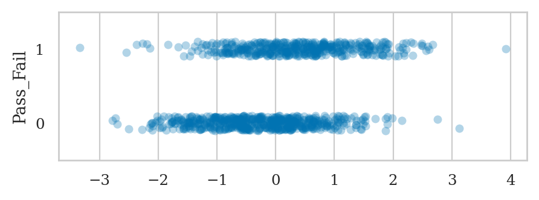
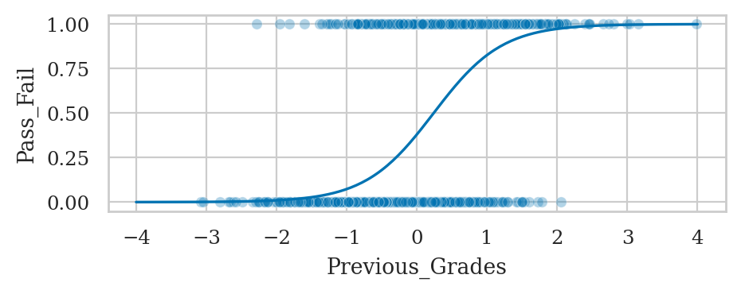
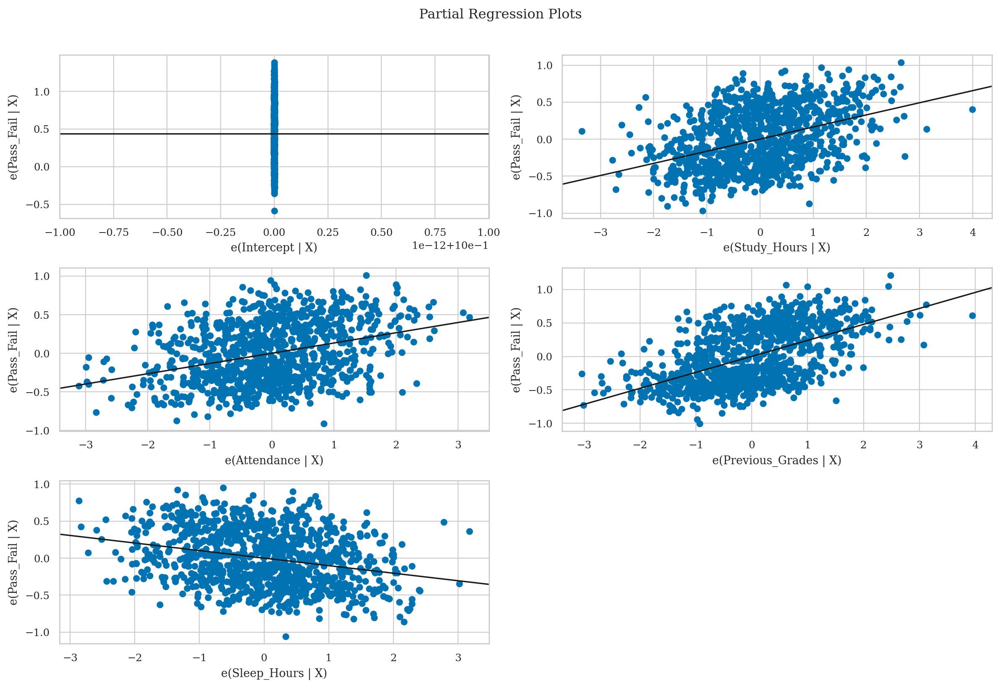
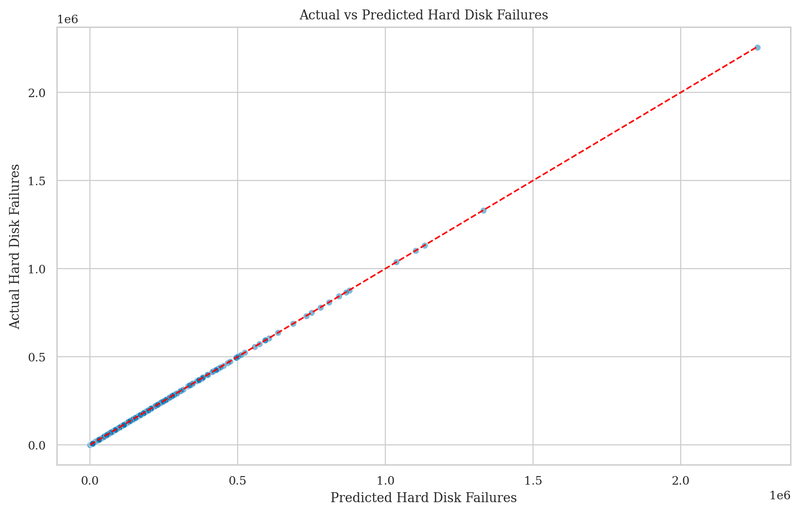
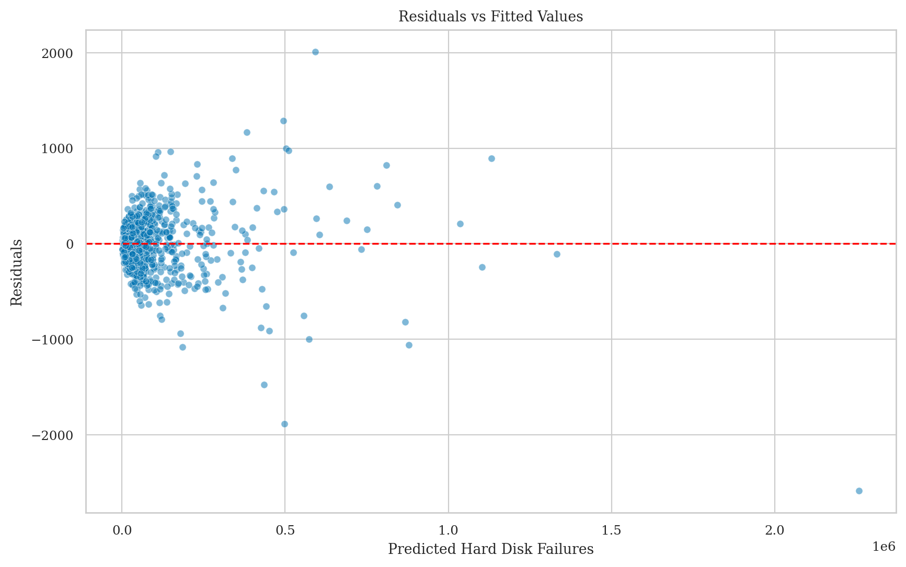
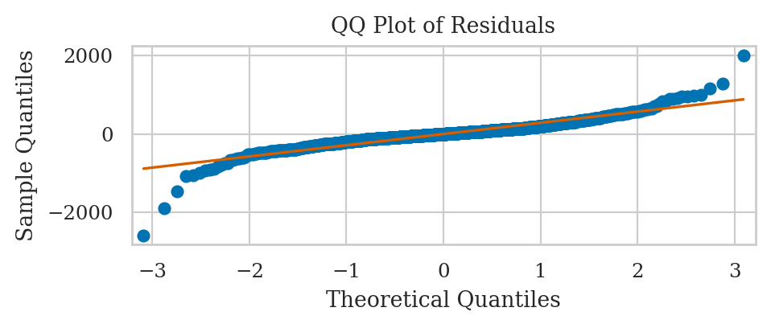
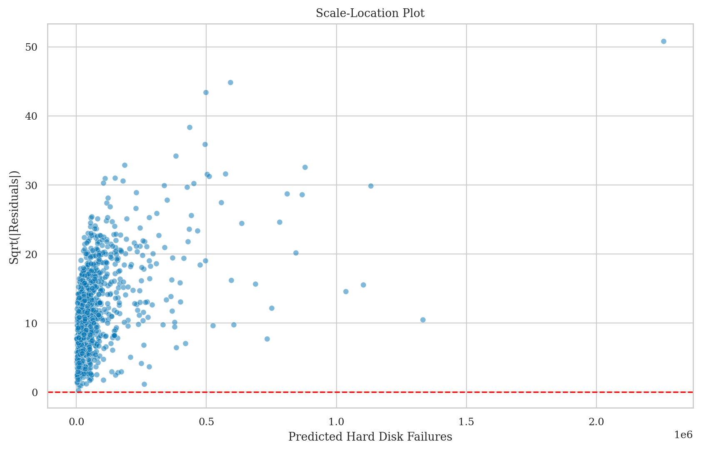

Section 4.6 — Generalized linear models#
This notebook contains the code examples from Section 4.6 Generalized linear models from the No Bullshit Guide to Statistics.
Notebook setup#
# load Python modules
import os
import numpy as np
import pandas as pd
import seaborn as sns
import matplotlib.pyplot as plt
# Figures setup
plt.clf() # needed otherwise `sns.set_theme` doesn't work
from plot_helpers import RCPARAMS
# RCPARAMS.update({'figure.figsize': (10, 3)}) # good for screen
RCPARAMS.update({'figure.figsize': (5, 1.6)}) # good for print
sns.set_theme(
context="paper",
style="whitegrid",
palette="colorblind",
rc=RCPARAMS,
)
# High-resolution please
%config InlineBackend.figure_format = 'retina'
# Where to store figures
DESTDIR = "figures/lm/generalized"
<Figure size 640x480 with 0 Axes>
# set random seed for repeatability
np.random.seed(42)
Logistic regression#
cdf(x) = 1/(1 + exp(-x))
PDF $\( \lambda\left(x^{\prime}\beta\right)=\frac{e^{-x^{\prime}\beta}}{\left(1+e^{-x^{\prime}\beta}\right)^{2}} \)$
pdf(x) = np.exp(-X)/(1+np.exp(-X))**2
from scipy.special import logit
from scipy.special import expit
expit(-1), logit(0.268941)
(0.2689414213699951, -1.0000021431568107)
Here’s a Python code example to generate a synthetic dataset suitable for teaching logistic regression. The dataset will have an outcome variable (Pass/Fail) and four predictors (Study Hours, Attendance, Previous Grades, and Sleep Hours).
import numpy as np
import pandas as pd
# Set random seed for reproducibility
np.random.seed(42)
# Number of samples
n_samples = 1000
# Generate predictor variables
study_hours = np.random.normal(loc=5, scale=2, size=n_samples) # Study hours per week
attendance = np.random.normal(loc=75, scale=10, size=n_samples) # Attendance percentage
previous_grades = np.random.normal(loc=70, scale=15, size=n_samples) # Previous grades percentage
sleep_hours = np.random.normal(loc=7, scale=1.5, size=n_samples) # Sleep hours per night
# Normalize variables to make them suitable for logistic regression
study_hours = (study_hours - np.mean(study_hours)) / np.std(study_hours)
attendance = (attendance - np.mean(attendance)) / np.std(attendance)
previous_grades = (previous_grades - np.mean(previous_grades)) / np.std(previous_grades)
sleep_hours = (sleep_hours - np.mean(sleep_hours)) / np.std(sleep_hours)
# Define logistic regression coefficients
coefficients = np.array([1.5, 1.2, 2.0, -1.0])
intercept = -0.5
# Linear combination of inputs
linear_combination = (coefficients[0] * study_hours +
coefficients[1] * attendance +
coefficients[2] * previous_grades +
coefficients[3] * sleep_hours +
intercept)
# Apply the logistic function to get probabilities
probabilities = 1 / (1 + np.exp(-linear_combination))
# Generate binary outcomes (Pass/Fail)
pass_fail = np.random.binomial(1, probabilities)
# Create a DataFrame
data = pd.DataFrame({
'Study_Hours': study_hours,
'Attendance': attendance,
'Previous_Grades': previous_grades,
'Sleep_Hours': sleep_hours,
'Pass_Fail': pass_fail
})
# Display the first few rows of the dataset
print(data.head())
# Save the dataset to a CSV file
data.to_csv('synthetic_student_data.csv', index=False)
Study_Hours Attendance Previous_Grades Sleep_Hours Pass_Fail
0 0.487759 1.332576 -0.692816 -1.840107 1
1 -0.161022 0.856405 -0.152959 -0.819843 1
2 0.642015 -0.011240 -0.812090 -0.384647 1
3 1.536382 -0.719965 -0.319235 1.856976 0
4 -0.258995 0.629303 -1.932372 0.560356 0
This code generates a synthetic dataset with 1000 samples. The predictors are:
Study_Hours: Normally distributed around 5 hours per week.Attendance: Normally distributed around 75% attendance.Previous_Grades: Normally distributed around 70% grades.Sleep_Hours: Normally distributed around 7 hours per night.
These predictors are normalized before creating the outcome variable (Pass_Fail). The logistic regression model is defined by specific coefficients and an intercept, and the probabilities are computed using the logistic function. The outcome is generated using these probabilities. Finally, the dataset is saved to a CSV file and printed for inspection.
import statsmodels.api as sm
import statsmodels.formula.api as smf
# Load the synthetic dataset
data = pd.read_csv('synthetic_student_data.csv')
# Fit the logistic regression model using statsmodels formula API
formula = 'Pass_Fail ~ Study_Hours + Attendance + Previous_Grades + Sleep_Hours'
logit_model = smf.logit(formula=formula, data=data)
result = logit_model.fit()
# Print the summary of the logistic regression model
print("\nLogistic Regression Model Summary:")
print(result.summary())
Optimization terminated successfully.
Current function value: 0.370875
Iterations 7
Logistic Regression Model Summary:
Logit Regression Results
==============================================================================
Dep. Variable: Pass_Fail No. Observations: 1000
Model: Logit Df Residuals: 995
Method: MLE Df Model: 4
Date: Wed, 29 May 2024 Pseudo R-squ.: 0.4587
Time: 14:39:12 Log-Likelihood: -370.88
converged: True LL-Null: -685.19
Covariance Type: nonrobust LLR p-value: 9.871e-135
===================================================================================
coef std err z P>|z| [0.025 0.975]
-----------------------------------------------------------------------------------
Intercept -0.4893 0.094 -5.192 0.000 -0.674 -0.305
Study_Hours 1.3810 0.118 11.729 0.000 1.150 1.612
Attendance 1.1203 0.112 10.033 0.000 0.901 1.339
Previous_Grades 2.0478 0.147 13.974 0.000 1.761 2.335
Sleep_Hours -0.9075 0.105 -8.626 0.000 -1.114 -0.701
===================================================================================
# np.mean(study_hours)) / np.std(study_hours)
sns.stripplot(data=data, x=study_hours, y="Pass_Fail", alpha=0.3, orient="h", order=[1,0]);

prev_grades_space = np.linspace(-4,4,200)
zeros_space = np.zeros(200)
preds = result.predict({"Previous_Grades": prev_grades_space,
"Study_Hours":zeros_space,
"Attendance":zeros_space,
"Sleep_Hours":zeros_space})
ax = sns.scatterplot(data=data, x="Previous_Grades", y="Pass_Fail", alpha=0.3)
sns.lineplot(x=prev_grades_space, y=preds, ax=ax);

import seaborn as sns
import matplotlib.pyplot as plt
from statsmodels.graphics.regressionplots import plot_partregress_grid
# Create partial regression plots
fig = plt.figure(figsize=(12, 8))
plot_partregress_grid(result, fig=fig)
plt.suptitle('Partial Regression Plots', y=1.02)
plt.show()

Poisson regression#
import numpy as np
import pandas as pd
from scipy.stats import norm, poisson
# Set the random seed for reproducibility
np.random.seed(42)
# Number of observations
n = 1000
# Generate predictors
disk_age = norm.rvs(loc=5, scale=2, size=n) # Disk age in years
temperature = norm.rvs(loc=35, scale=5, size=n) # Temperature in Celsius
read_write_ops = norm.rvs(loc=200, scale=50, size=n) # Number of read/write operations (in millions)
# Coefficients for the predictors
beta_0 = 1.5 # Intercept
beta_1 = 0.3 # Coefficient for disk age
beta_2 = 0.1 # Coefficient for temperature
beta_3 = 0.02 # Coefficient for read/write operations
# Linear predictor
linear_predictor = beta_0 + beta_1 * disk_age + beta_2 * temperature + beta_3 * read_write_ops
# Apply exponential function to get the Poisson rate parameter
lambda_ = np.exp(linear_predictor)
# Generate the outcome variable (number of hard disk failures) using the Poisson distribution
hard_disk_failures = poisson.rvs(mu=lambda_)
# Create a DataFrame
df = pd.DataFrame({
'disk_age': disk_age,
'temperature': temperature,
'read_write_ops': read_write_ops,
'hard_disk_failures': hard_disk_failures
})
# Display the first few rows of the DataFrame
print(df.head())
# Save the dataset to a CSV file
df.to_csv('synthetic_hard_disk_failures.csv', index=False)
disk_age temperature read_write_ops hard_disk_failures
0 5.993428 41.996777 166.241086 50094
1 4.723471 39.623168 192.774066 45444
2 6.295377 35.298152 160.379004 25074
3 8.046060 31.765316 184.601924 47980
4 4.531693 38.491117 105.319267 6673
import numpy as np
import pandas as pd
import statsmodels.formula.api as smf
import seaborn as sns
import matplotlib.pyplot as plt
# Assuming the synthetic dataset is already created and loaded into df
# Fit the Poisson regression model using the formula API
poisson_model = smf.poisson('hard_disk_failures ~ disk_age + temperature + read_write_ops', data=df).fit()
# Print the model summary
print(poisson_model.summary())
# Predict the number of hard disk failures
df['predicted_failures'] = poisson_model.predict(df)
Optimization terminated successfully.
Current function value: 6.690405
Iterations 7
Poisson Regression Results
==============================================================================
Dep. Variable: hard_disk_failures No. Observations: 1000
Model: Poisson Df Residuals: 996
Method: MLE Df Model: 3
Date: Wed, 29 May 2024 Pseudo R-squ.: 0.9999
Time: 14:39:13 Log-Likelihood: -6690.4
converged: True LL-Null: -6.5522e+07
Covariance Type: nonrobust LLR p-value: 0.000
==================================================================================
coef std err z P>|z| [0.025 0.975]
----------------------------------------------------------------------------------
Intercept 1.4992 0.001 1323.131 0.000 1.497 1.501
disk_age 0.3000 5.62e-05 5341.496 0.000 0.300 0.300
temperature 0.1000 2.3e-05 4347.431 0.000 0.100 0.100
read_write_ops 0.0200 2.09e-06 9575.948 0.000 0.020 0.020
==================================================================================
# Plot 1: Actual vs Predicted values
plt.figure(figsize=(10, 6))
sns.scatterplot(x=df['predicted_failures'], y=df['hard_disk_failures'], alpha=0.5)
plt.plot([df['predicted_failures'].min(), df['predicted_failures'].max()],
[df['predicted_failures'].min(), df['predicted_failures'].max()],
color='red', linestyle='--')
plt.xlabel('Predicted Hard Disk Failures')
plt.ylabel('Actual Hard Disk Failures')
plt.title('Actual vs Predicted Hard Disk Failures')
plt.show()

# Plot 2: Residuals vs Fitted
residuals = df['hard_disk_failures'] - df['predicted_failures']
plt.figure(figsize=(10, 6))
sns.scatterplot(x=df['predicted_failures'], y=residuals, alpha=0.5)
plt.axhline(0, color='red', linestyle='--')
plt.xlabel('Predicted Hard Disk Failures')
plt.ylabel('Residuals')
plt.title('Residuals vs Fitted Values')
plt.show()

# Plot 3: QQ plot of residuals
sm.qqplot(residuals, line='s')
plt.title('QQ Plot of Residuals')
plt.show()

# Plot 4: Scale-Location plot (Spread-Location plot)
sqrt_abs_residuals = np.sqrt(np.abs(residuals))
plt.figure(figsize=(10, 6))
sns.scatterplot(x=df['predicted_failures'], y=sqrt_abs_residuals, alpha=0.5)
plt.axhline(0, color='red', linestyle='--')
plt.xlabel('Predicted Hard Disk Failures')
plt.ylabel('Sqrt(|Residuals|)')
plt.title('Scale-Location Plot')
plt.show()

Extra examples#
Example N: student admissions#
# data = whether students got admitted (admit=1) or not (admit=0) based on their gre and gpa scores, and the rank of their instutution
# raw_data = pd.read_csv('https://stats.idre.ucla.edu/stat/data/binary.csv')
binary = pd.read_csv('./explorations/data/binary.csv')
binary.head(3)
---------------------------------------------------------------------------
FileNotFoundError Traceback (most recent call last)
Cell In[16], line 3
1 # data = whether students got admitted (admit=1) or not (admit=0) based on their gre and gpa scores, and the rank of their instutution
2 # raw_data = pd.read_csv('https://stats.idre.ucla.edu/stat/data/binary.csv')
----> 3 binary = pd.read_csv('./explorations/data/binary.csv')
4 binary.head(3)
File /opt/hostedtoolcache/Python/3.8.18/x64/lib/python3.8/site-packages/pandas/io/parsers/readers.py:912, in read_csv(filepath_or_buffer, sep, delimiter, header, names, index_col, usecols, dtype, engine, converters, true_values, false_values, skipinitialspace, skiprows, skipfooter, nrows, na_values, keep_default_na, na_filter, verbose, skip_blank_lines, parse_dates, infer_datetime_format, keep_date_col, date_parser, date_format, dayfirst, cache_dates, iterator, chunksize, compression, thousands, decimal, lineterminator, quotechar, quoting, doublequote, escapechar, comment, encoding, encoding_errors, dialect, on_bad_lines, delim_whitespace, low_memory, memory_map, float_precision, storage_options, dtype_backend)
899 kwds_defaults = _refine_defaults_read(
900 dialect,
901 delimiter,
(...)
908 dtype_backend=dtype_backend,
909 )
910 kwds.update(kwds_defaults)
--> 912 return _read(filepath_or_buffer, kwds)
File /opt/hostedtoolcache/Python/3.8.18/x64/lib/python3.8/site-packages/pandas/io/parsers/readers.py:577, in _read(filepath_or_buffer, kwds)
574 _validate_names(kwds.get("names", None))
576 # Create the parser.
--> 577 parser = TextFileReader(filepath_or_buffer, **kwds)
579 if chunksize or iterator:
580 return parser
File /opt/hostedtoolcache/Python/3.8.18/x64/lib/python3.8/site-packages/pandas/io/parsers/readers.py:1407, in TextFileReader.__init__(self, f, engine, **kwds)
1404 self.options["has_index_names"] = kwds["has_index_names"]
1406 self.handles: IOHandles | None = None
-> 1407 self._engine = self._make_engine(f, self.engine)
File /opt/hostedtoolcache/Python/3.8.18/x64/lib/python3.8/site-packages/pandas/io/parsers/readers.py:1661, in TextFileReader._make_engine(self, f, engine)
1659 if "b" not in mode:
1660 mode += "b"
-> 1661 self.handles = get_handle(
1662 f,
1663 mode,
1664 encoding=self.options.get("encoding", None),
1665 compression=self.options.get("compression", None),
1666 memory_map=self.options.get("memory_map", False),
1667 is_text=is_text,
1668 errors=self.options.get("encoding_errors", "strict"),
1669 storage_options=self.options.get("storage_options", None),
1670 )
1671 assert self.handles is not None
1672 f = self.handles.handle
File /opt/hostedtoolcache/Python/3.8.18/x64/lib/python3.8/site-packages/pandas/io/common.py:859, in get_handle(path_or_buf, mode, encoding, compression, memory_map, is_text, errors, storage_options)
854 elif isinstance(handle, str):
855 # Check whether the filename is to be opened in binary mode.
856 # Binary mode does not support 'encoding' and 'newline'.
857 if ioargs.encoding and "b" not in ioargs.mode:
858 # Encoding
--> 859 handle = open(
860 handle,
861 ioargs.mode,
862 encoding=ioargs.encoding,
863 errors=errors,
864 newline="",
865 )
866 else:
867 # Binary mode
868 handle = open(handle, ioargs.mode)
FileNotFoundError: [Errno 2] No such file or directory: './explorations/data/binary.csv'
pd.crosstab(
binary['admit'],
binary['rank'],
margins = False
)
| rank | 1 | 2 | 3 | 4 |
|---|---|---|---|---|
| admit | ||||
| 0 | 28 | 97 | 93 | 55 |
| 1 | 33 | 54 | 28 | 12 |
lrbin = smf.logit('admit ~ gre + gpa + C(rank)', data=binary).fit()
lrbin.params
# lrbin.summary()
Optimization terminated successfully.
Current function value: 0.573147
Iterations 6
Intercept -3.989979
C(rank)[T.2] -0.675443
C(rank)[T.3] -1.340204
C(rank)[T.4] -1.551464
gre 0.002264
gpa 0.804038
dtype: float64
The above model uses the rank=1 as the reference category an the log odds reported are with respect to this catrgory
etc. for others rank[T.3] -1.340204 rank[T.4] -1.551464
See LogisticRegressionChangeOfReferenceCategoricalValue.ipynb for exercise recodign relative to different refrence level.
from sklearn.linear_model import LogisticRegression
from sklearn.compose import ColumnTransformer
from sklearn.preprocessing import StandardScaler
from sklearn.preprocessing import OneHotEncoder
X = binary.drop("admit", axis=1)
y = binary["admit"]
transformer = [
('ohe',
OneHotEncoder(drop = 'first',
handle_unknown = 'ignore',
sparse_output = False),
["rank"]),
]
preprocessor = ColumnTransformer(
transformers = transformer,
remainder = 'passthrough',
).set_output(transform='pandas')
X_prep = preprocessor.fit_transform(X)
lr = LogisticRegression(solver="lbfgs", penalty=None, max_iter=1000)
lr.fit(X_prep.to_numpy(dtype=np.float32), y)
lr.intercept_, lr.coef_
(array([-3.99021277]),
array([[-0.67551587, -1.34051977, -1.55172341, 0.0022647 , 0.80409866]]))
Titanic#
cf. Titanic_Logistic_Regression.ipynb
titanic = pd.read_csv('./explorations/data/titanic.csv')
titanic.head(3)
| PassengerId | Survived | Pclass | Name | Sex | Age | SibSp | Parch | Ticket | Fare | Cabin | Embarked | |
|---|---|---|---|---|---|---|---|---|---|---|---|---|
| 0 | 1 | 0 | 3 | Braund, Mr. Owen Harris | male | 22.0 | 1 | 0 | A/5 21171 | 7.2500 | NaN | S |
| 1 | 2 | 1 | 1 | Cumings, Mrs. John Bradley (Florence Briggs Th... | female | 38.0 | 1 | 0 | PC 17599 | 71.2833 | C85 | C |
| 2 | 3 | 1 | 3 | Heikkinen, Miss. Laina | female | 26.0 | 0 | 0 | STON/O2. 3101282 | 7.9250 | NaN | S |
df = titanic[['Survived', 'Age', 'Sex', 'Pclass']]
df = pd.get_dummies(df, columns=['Sex', 'Pclass'], drop_first=True)
df.dropna(inplace=True)
df.head()
| Survived | Age | Sex_male | Pclass_2 | Pclass_3 | |
|---|---|---|---|---|---|
| 0 | 0 | 22.0 | True | False | True |
| 1 | 1 | 38.0 | False | False | False |
| 2 | 1 | 26.0 | False | False | True |
| 3 | 1 | 35.0 | False | False | False |
| 4 | 0 | 35.0 | True | False | True |
X = df.drop('Survived', axis=1)
y = df['Survived']
from sklearn.linear_model import LogisticRegression
model = LogisticRegression(penalty=None)
titresult = model.fit(X, y)
titresult.intercept_, titresult.coef_
(array([3.77702703]),
array([[-0.03698571, -2.52276365, -1.30981349, -2.58063585]]))
lrtit = smf.logit("Survived ~ Age + Sex_male + Pclass_2 + Pclass_3", data=df).fit()
lrtit.params
Optimization terminated successfully.
Current function value: 0.453279
Iterations 6
Intercept 3.777013
Sex_male[T.True] -2.522781
Pclass_2[T.True] -1.309799
Pclass_3[T.True] -2.580625
Age -0.036985
dtype: float64